大曲之源
三百六十首乐曲,四千四百九十二行歌词,集歌、舞、乐于一体。都塔尔的低语、热瓦甫的清亮、手鼓的呼吸,交织成西域大地上最悠长的回响。二〇〇五年,它入选联合国教科文组织人类口头和非物质遗产代表作名录。
FIELD NOTES · 田野纪行
调研团队赴新疆喀什、莎车开展实地调查。以下为文字纪实、实地影像与访谈现场影像等素材;潮汕英歌舞部分为公开授权图片,团队实地拍摄将于下一阶段展开。
摘自团队纪录片《从绿洲到海岸》旁白
三百六十首乐曲,四千四百九十二行歌词,集歌、舞、乐于一体。都塔尔的低语、热瓦甫的清亮、手鼓的呼吸,交织成西域大地上最悠长的回响。二〇〇五年,它入选联合国教科文组织人类口头和非物质遗产代表作名录。
喀什古城的巷子里,另一种木卡姆的声音,藏在寻常的烟火里。手鼓一响,路过的老人停下了脚步;琴声一起,整条街都是观众。没有舞台,没有门票,音乐就长在生活里。
华灯初上,莎车的舞台,正在为木卡姆亮起。白发艺人端坐其中,年轻乐手站在他们身旁。大幕拉开,乐声一起,四百多年前的声音,就这样活在了今晚。
木卡姆很难,难到连隔壁民族的乐师都说,他们唱自己民族的歌。传承从来不是一条路。它需要舞台上的光,也需要田埂上的耐心;需要有人坚守,也需要有人记录。而我们,正在记录的路上。
团队自摄 · 新疆喀什 / 莎车
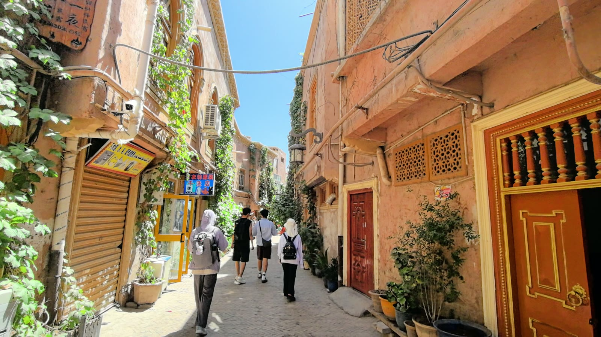
窄窄的巷子,弯弯绕绕,把人一步步带回旧时光。
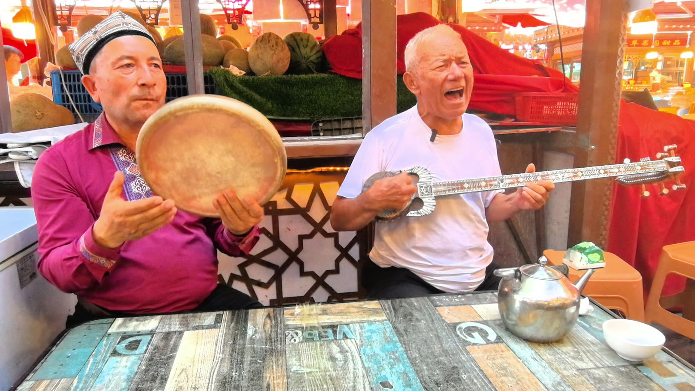
街头巷尾,琴声一起,整条街都是观众。
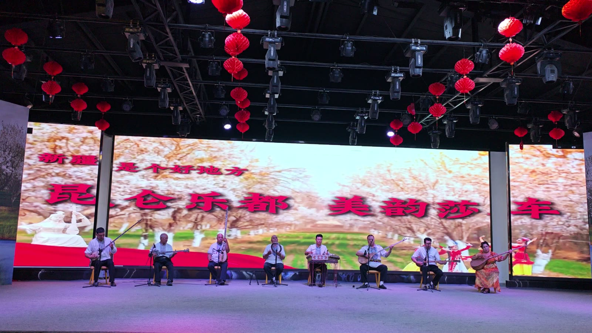
木卡姆专场演出,白发艺人与年轻乐手同台。
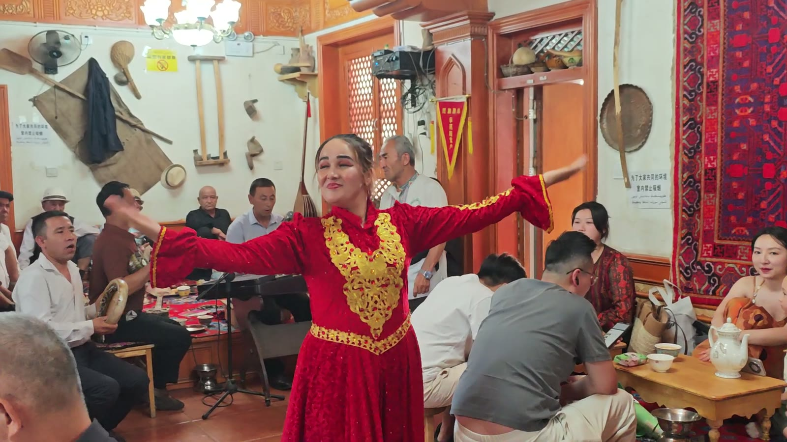
茶馆里的木卡姆表演,音乐就长在生活里。
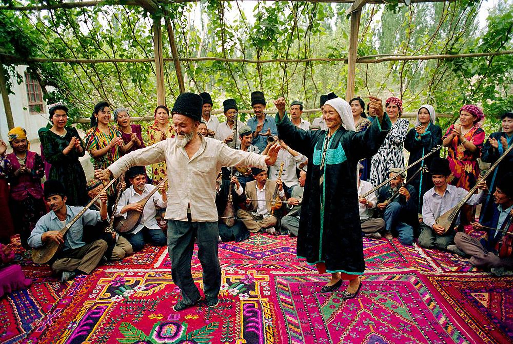
摄影:Liang Li · CC0 · 来源:Wikimedia Commons
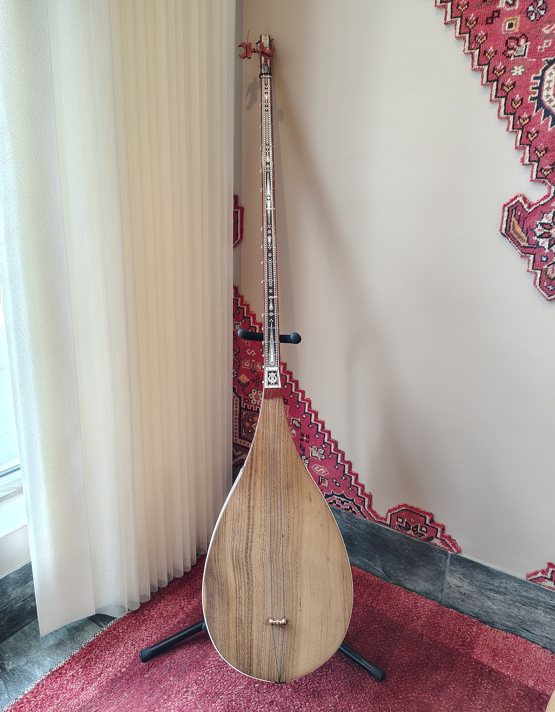
摄影:Yuet Man Lee · CC BY-SA 4.0 · 来源:Wikimedia Commons
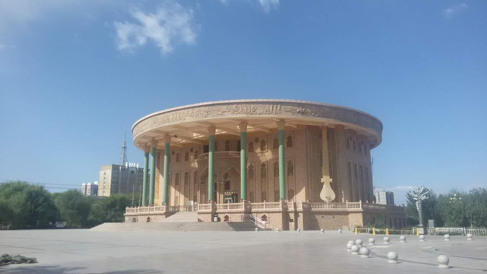
摄影:Muzzleflash · CC0 · 来源:Wikimedia Commons
团队自摄影像(上图)均由调研团队实地拍摄(视频抽帧);"公开授权补充影像"来自 Wikimedia Commons,仅供展示参考。完整视频素材容量较大,整理完成后将陆续上线。
调研期间,团队与当地乐手、群众进行了多场交流访谈
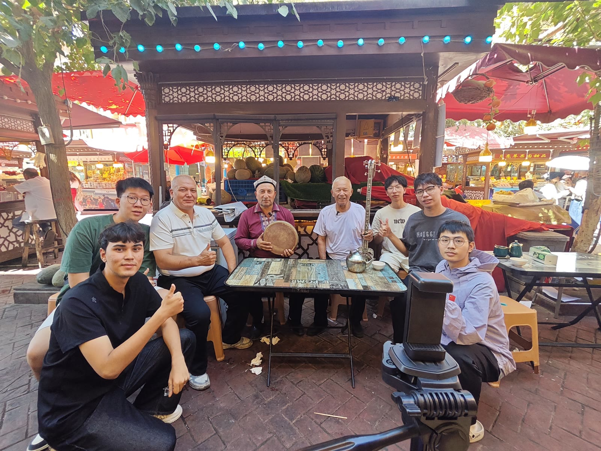
调研团队与当地乐手交流。
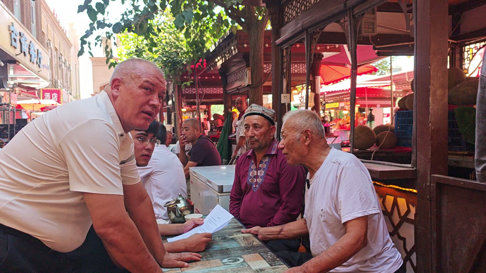
一场关于音乐与生活的对话。
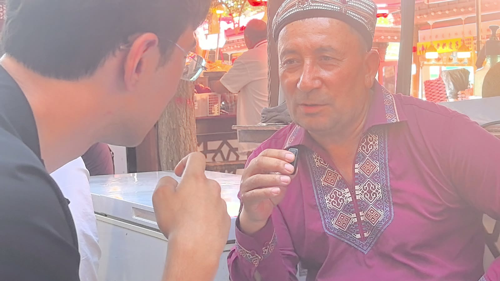
围坐而谈,听见田野里的声音。
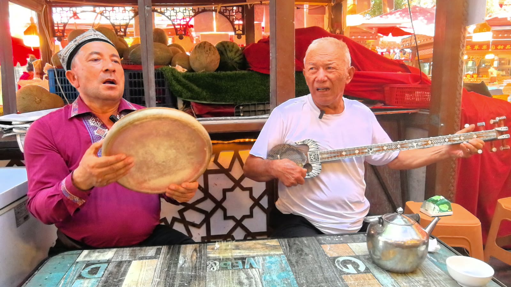
访谈中的乐器交流。
访谈现场影像均由调研团队实地拍摄(视频抽帧)。
潮汕英歌舞 · 公开授权图片(网络来源)
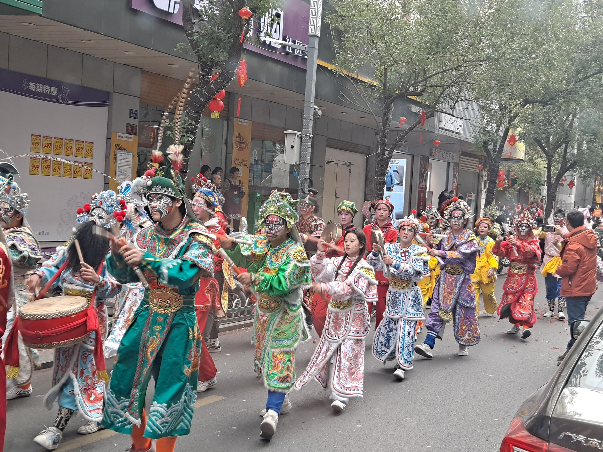
鼓点起、双棒响,梁山好汉脸谱登场。(CC0)
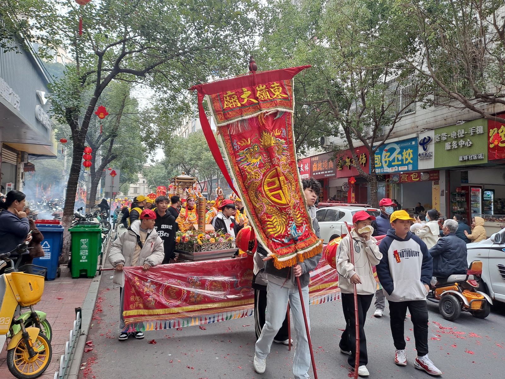
队形开合之间,是武术的根与舞的魂。(CC0)
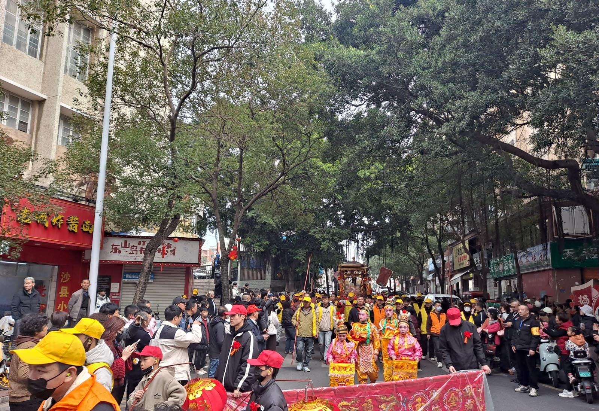
短促有力的节奏循环,锣鼓为王。(CC0)
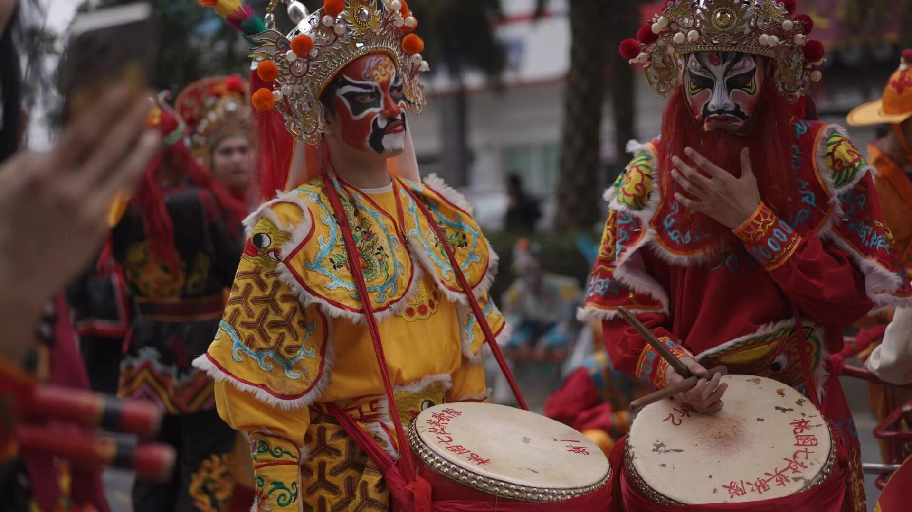
摄影:Zoemonday · CC BY-SA 4.0 · 来源:Wikimedia Commons
潮汕实地素材将于下一阶段采集,届时与新疆素材并置对照,呈现"从绿洲到海岸"的完整互鉴。CC0 图片亦来自 Wikimedia Commons(详见 README 版权表)。